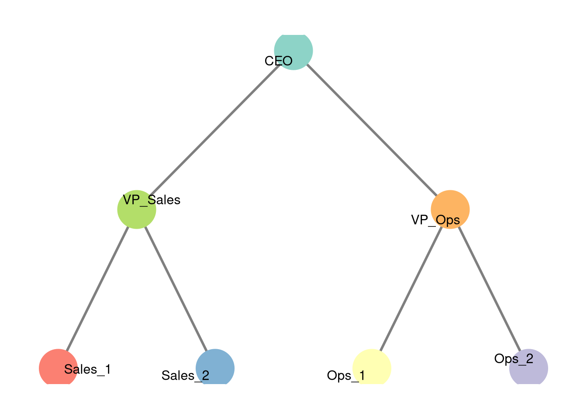
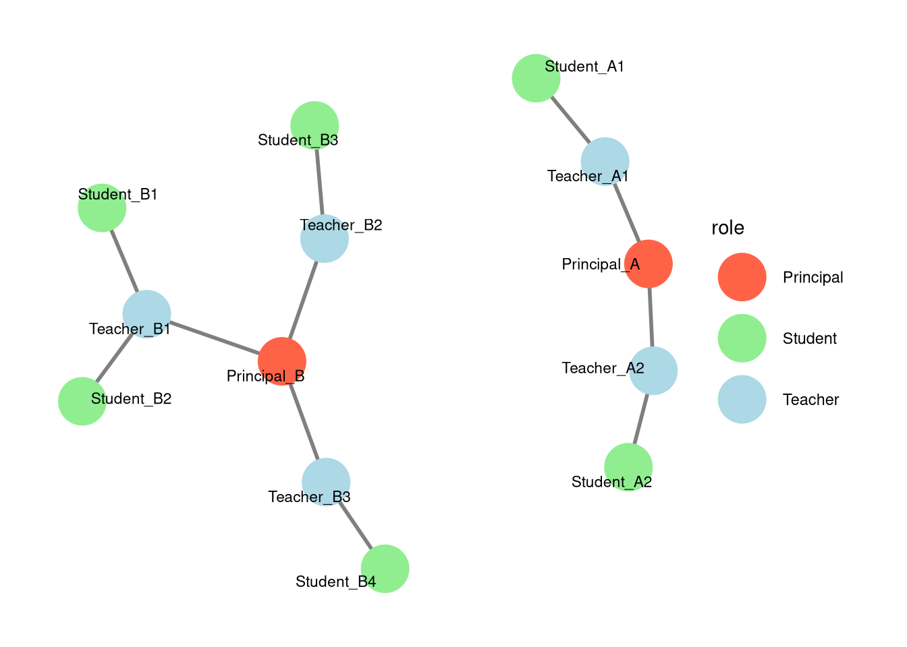

33 Automorphic and Regular Equivalence
33.1 Introduction
In our previous discussions on network positions, we focused primarily on structural equivalence. Recall that two nodes are structurally equivalent if they share the exact same neighbors. While this is a powerful concept, it is often too restrictive for real-world social networks. In many situations, individuals occupy similar social roles or positions without knowing the exact same people.
To address this, network analysts use two relaxed notions of equivalence: automorphic equivalence and regular equivalence. These concepts allow us to group nodes based on the structure of their ties or the roles they play, rather than their specific local connections.
33.2 Automorphic Equivalence
Automorphic equivalence focuses on the structural symmetry of a network. Two nodes are automorphically equivalent if they occupy indistinguishable structural locations in the overall network, even if their specific neighbors are different.
Formally, two nodes are automorphically equivalent if there is a way to relabel the nodes (an automorphism) such that the overall structure of the graph remains mathematically identical, and the two nodes can be swapped.
33.2.1 Example of Automorphic Equivalence
Consider a network structured like a corporate hierarchy with two distinct branches.

In Figure 33.1, the CEO is connected to two Vice Presidents: VP_Sales and VP_Ops. Each VP manages two employees.
Sales_1andSales_2are structurally equivalent because they share the exact same neighbor (VP_Sales).VP_SalesandVP_Opsare not structurally equivalent because they do not share the exact same neighbors (they manage different employees).- However,
VP_SalesandVP_Opsare automorphically equivalent. If we were to swap the entire Sales branch with the Operations branch, the overall structure of the organization chart would look exactly the same. They occupy identical structural positions within the network’s topology.
33.3 Regular Equivalence
Regular equivalence is an even broader concept that focuses on the roles actors play. Two actors are regularly equivalent if they have similar types of relationships to other roles or types of actors, rather than being connected to structurally symmetric positions.
For example, a doctor in a large urban hospital and a doctor in a small rural clinic might not be automorphically equivalent (because the overall structure of their respective hospitals is completely different), but they are regularly equivalent because they both treat patients and report to medical directors.
33.3.1 Example of Regular Equivalence
Let’s look at an example involving teachers, students, and principals in two different schools.

In Figure 33.2, School A is small, while School B is larger and has a different structural shape. Therefore, a teacher in School A is not automorphically equivalent to a teacher in School B.
However, all teachers are regularly equivalent to one another. Why? Because they all share a pattern of ties to other roles: every teacher is connected to a principal and to one or more students. Regular equivalence identifies the underlying social role (“Teacher”) based on the pattern of connections to other roles (“Principal” and “Student”), ignoring the exact number of ties or the overarching symmetry of the graph.
33.4 Summary of Equivalences
To summarize the three main types of network equivalence:
- Structural Equivalence: Actors share the exact same specific neighbors. (Most restrictive)
- Automorphic Equivalence: Actors occupy indistinguishable structural locations in a perfectly symmetric graph.
- Regular Equivalence: Actors play the same social role, connecting to similar types of other actors. (Most flexible)
Understanding these different levels of equivalence allows us to zoom out from the specific individuals in a network to analyze the broader roles, positions, and institutional structures that shape social life.